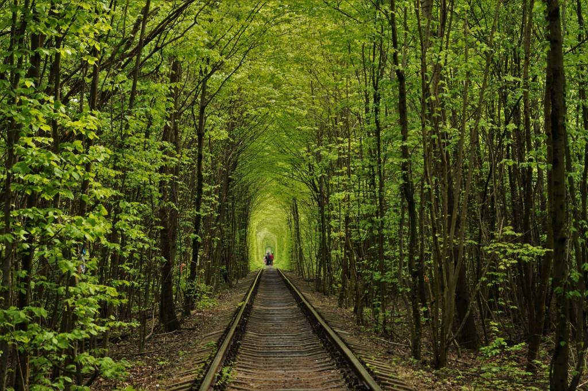
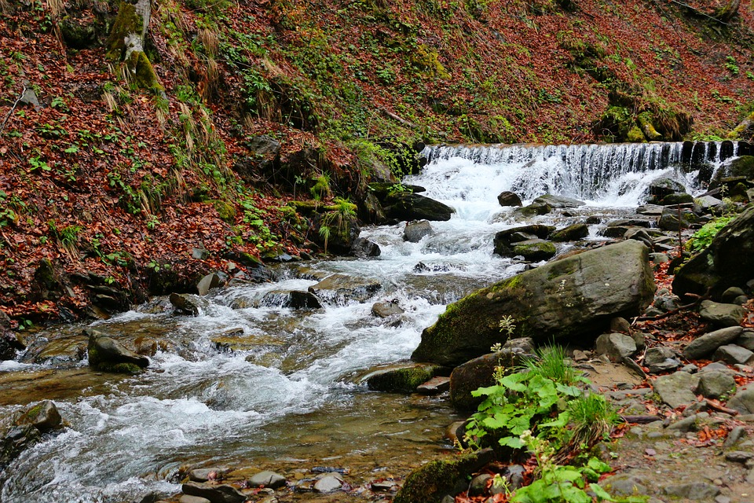
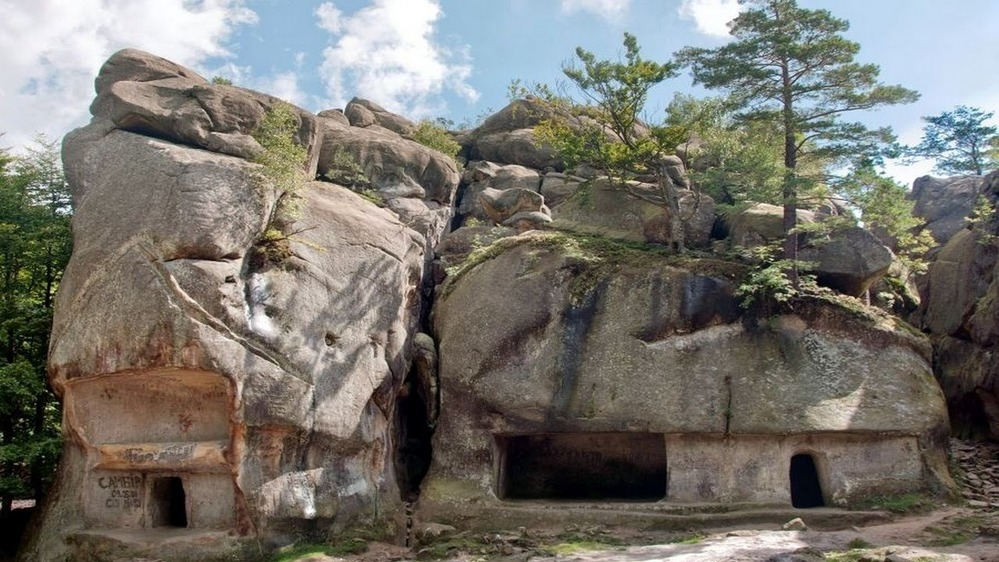
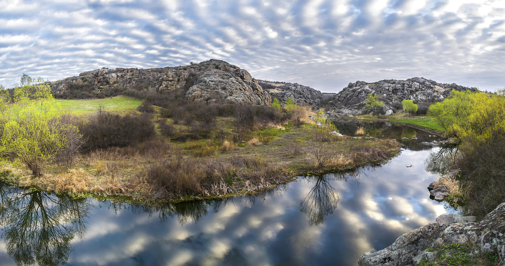
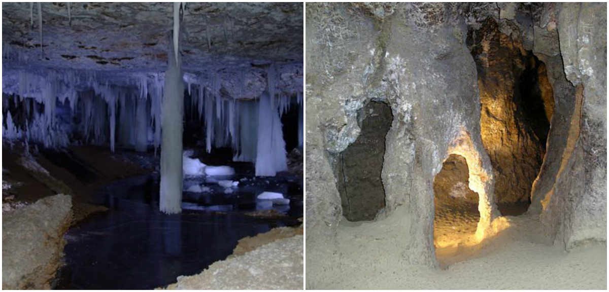

Природа Украины завораживает! Здесь можно найти американские каньоны, «инопланетные» ландшафты и пещерные лабиринты. В этих местах обязан побывать каждый турист!
9 природных достопримечательностей Украины, которые стоит увидеть каждому
Туннель любви
Это место словно из сна! «Живой» туннель с арочным сводом тянется над железнодорожной колеей близ поселка Клевань. Сюда стремятся попасть не только туристы и влюбленные, но и режиссеры, рекламщики.
Живописный памятник природы вдохновил даже японского кинорежиссера Акийоши Имазаки: он в 2014 году снял здесь фильм «Клевань: туннель любви».
- Адрес: Ровенская обл., Ровенский р-н, с. Клевань
Самое большое озеро украинских Карпат находится на высоте 989 метров, а в глубину достигает 22. Водоем окружают хвойные деревья, что создает великолепный пейзаж на фоне гор.
- Адрес: Закарпатская обл., Межгорский р-н, с. Синевирская Поляна
Водопад Шипот
У подножия горы Гемба льет свои хрустальные воды один из самых красивых водопадов Украины — Шипот.
Место стало почти легендарным благодаря фестивалю, который неформалы проводят здесь каждый год в первую неделю июля. Но многие путешественники лучшим временем для встречи с водопадом считают весну, когда талая вода наполняет поток.
- Адрес: Закарпатская обл., Межгорский р-н, с. Пилипец (в 6 км от Шипота)
Скалы Довбуша
Фото Zaharich.net
Огромные глыбы находятся на территории Поляницкого регионального ландшафтного парка. Скалы Довбуша образовались более 70 миллионов лет назад на дне теплого моря. Округлые камни покрыты зеленым бархатистым мхом.
Это живописное место манит не только пеших туристов, но и скалолазов, которые устраивают здесь выездные тренировки
- Адрес: Ивано-Франковская обл., Долинский р-н
Актовский каньон
Фото Анастасія Сак
Этот шедевр природы в Николаевской области еще называют «Каньоном дьявола». Нагромождение гранитно-базальтовых скал и валунов покрыто зеленой растительностью.
Актовский каньон — единственный в Европе, который по своим геолого-ландшафтным показателям напоминает всемирно известные североамериканские ущелья.
- Адрес: Николаевская обл., Вознесенский р-н
Кристальная пещера
Это настоящий карстовый лабиринт длиной в 22 км. Свое название, а заодно неиссякаемую любовь спелеологов пещера заслужила благодаря гипсовым кристаллам, которыми украшены ее стены.
- Адрес: Тернопольская обл., Борщевский р-н, с. Кривче